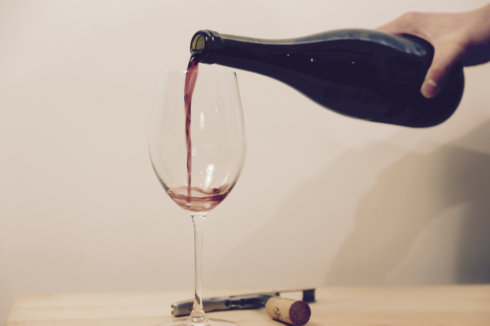
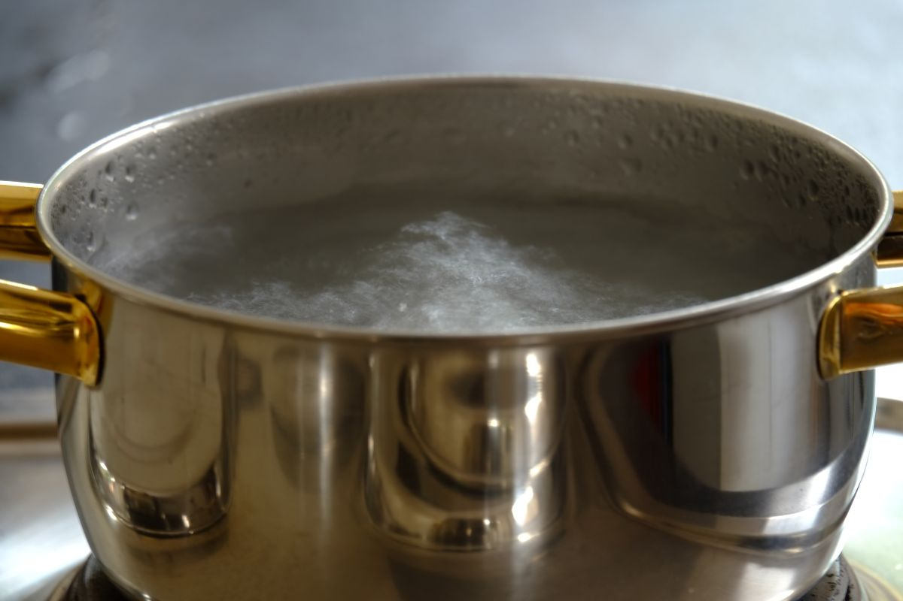
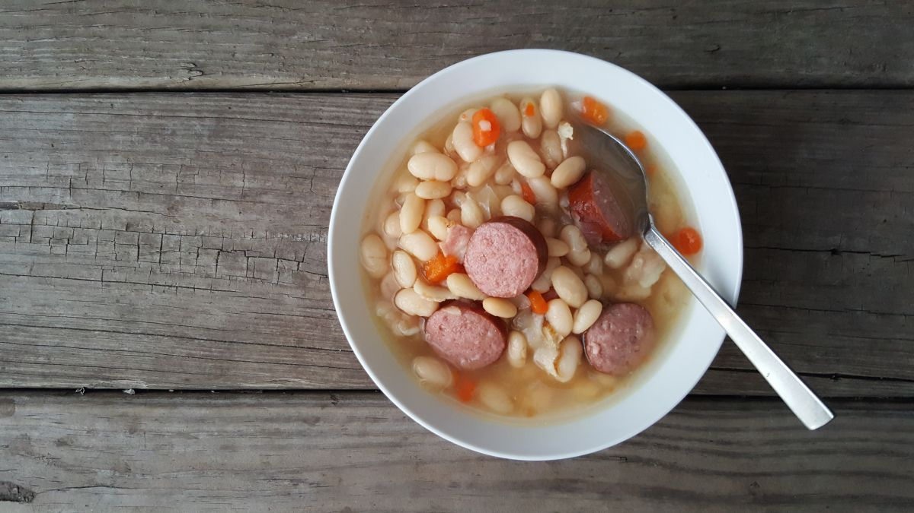
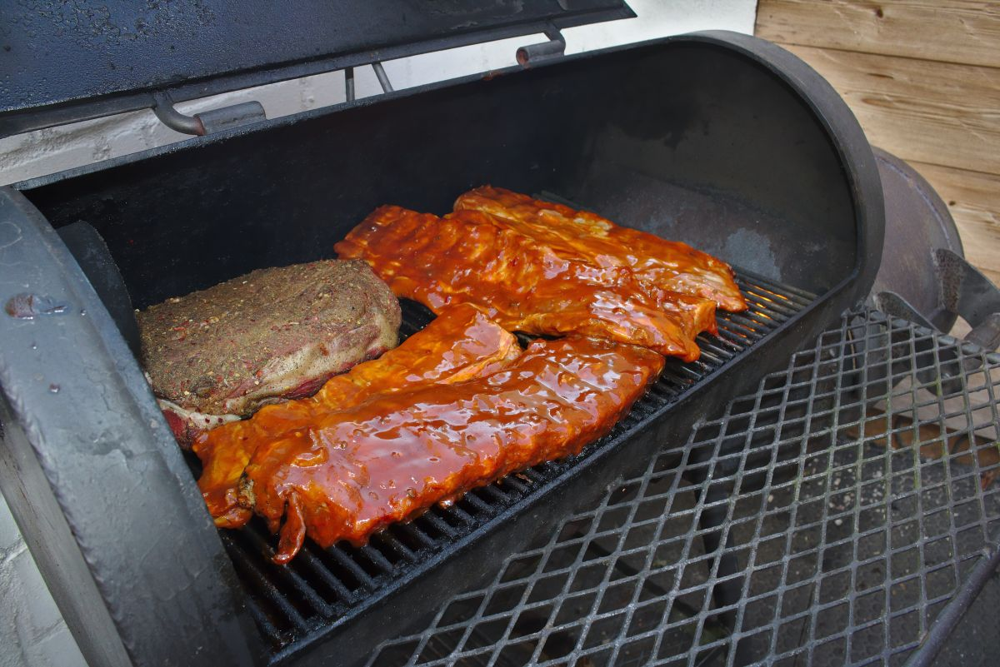
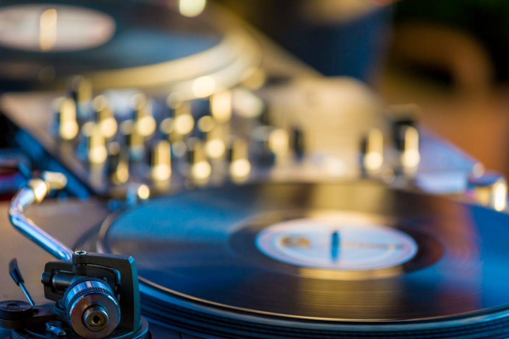
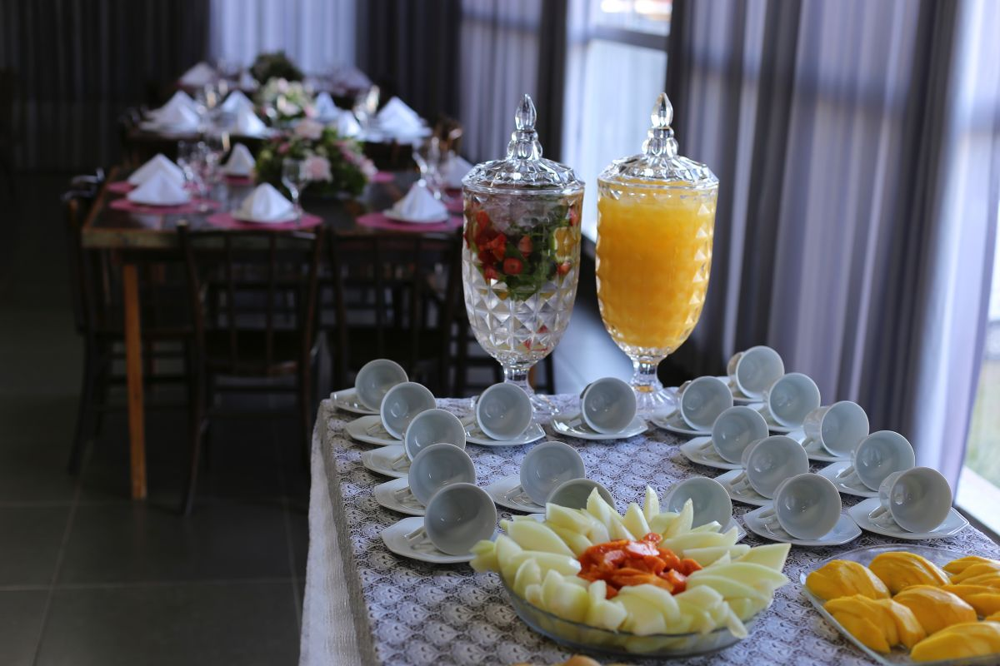

Miraflores 1177 · Puerto Montt
Acá se come desde 1962.
Sesenta y cuatro años en la misma esquina del barrio Chorrillos. Guatitas picantes, ajiaco, cazuelas y carnes a la parrilla, con cantores en las mesas del fondo cuando la noche se pone buena.
- 1962el año que abrió
- 80personas al día, en promedio
- 1de las dos finalistas a mejor picada de Chile
La pieza que ningún competidor puede copiar
Sesenta y cuatro años en la misma esquina.
Ningún restaurante nuevo de Puerto Montt puede mostrar esto, y es exactamente lo que hace que alguien elija esta mesa y no otra. Los hitos marcados como ejemplo los completa el dueño: son las preguntas que hay que hacerle en la primera conversación.
-
1962
Abre en Miraflores
El local parte en calle Miraflores, en el barrio Chorrillos-Miraflores, con la idea de darle de comer al que trabaja en el puerto.
-
19__
Llega la vitrola
¿Qué año fue? ¿Quién la trajo? Este hito está vacío a propósito: la respuesta la tiene el dueño y vale más que cualquier texto que pudiéramos inventar.
-
19__
El primer cantor
Los cantores populares son parte del local. El primero que se subió a cantar tiene nombre, y ese nombre es la mejor línea de esta página.
-
19__
La segunda generación
Un local de sesenta años cambió de manos al menos una vez. Cuándo y a quién es media historia.
-
Hoy
Finalista a mejor picada de Chile
Cirus Bar y La Campesina de Osorno compitieron por el título nacional de las picadas, en la convocatoria del Ministerio de las Culturas, las Artes y el Patrimonio.
Publicado en cultura.gob.cl
Los años en blanco no son un descuido: son la entrevista pendiente. Cada uno que se llene hace la página más difícil de copiar.
Cuando alguien saca la guitarra, nadie pide la cuenta.
Es lo que separa una picada de un restaurante. No se agenda ni se promete: pasa.
La carta
Cocina criolla, de las que ya casi no quedan.
Los platos de abajo son los que la prensa nombra cuando escribe sobre Cirus Bar. Los precios van como ejemplo hasta que el dueño los confirme: son referencia de picada, no su carta real.
-
Guatitas picantes
El plato con el que la nombran en todas partes. Picante de verdad, no de adorno.
$8.500
-
Ajiaco
Caldo de carne, papa y huevo. El plato del día siguiente, y acá se sirve todo el año.
$7.900
-
Cazuela
De vacuno o de ave según el día. Se pregunta al llegar, como corresponde.
$8.200
-
Carnes a la parrilla
A la brasa, con lo que la acompañe ese día. El corte lo canta el mesero.
$11.500
ejemplo Todo lo marcado así se reemplaza con la carta real del local. Los nombres de los platos salen de notas de prensa; los valores, no.

«Sesenta y cuatro años sirviendo a la misma calle. Eso no se abre: se hereda.»
La mesa
Lo que sale de la cocina.





Dónde y cuándo
Miraflores 1177, Puerto Montt.
Cierra domingos y festivos. El resto de la semana está abierto — el horario exacto lo confirma el dueño y va acá arriba, grande, porque es lo que más se busca.
- Dirección
- Miraflores 1177, barrio Chorrillos-Miraflores
- Teléfono
- 9 6231 7070
- Cierra
- Domingos y festivos
- Horario
- Lunes a sábado, 12:00 a 23:00
Reservar una mesa
Complete los cuatro datos y el mensaje queda armado. Se copia con un botón y se manda por donde usted prefiera.
Sin JavaScript el teléfono de arriba sigue funcionando: es un enlace normal, no un botón.
Para el dueño
Qué es esto y qué falta.
Qué es
Una propuesta de sitio web hecha por nuestra cuenta. Cirus Bar no la encargó ni la ha revisado. La hicimos con lo que está publicado del local: la dirección, el teléfono, el correo, el año de fundación y la nota de la competencia nacional de picadas.
Qué es ejemplo
Todo lo marcado con borde punteado: los precios, el horario exacto y los años en blanco de la línea de tiempo. No inventamos nada sobre el negocio que no estuviera publicado — lo que no sabemos, queda marcado en vez de rellenado.
Qué cambiaría la página entera
Tres fotos del local de verdad: la fachada, el salón con gente y un plato saliendo de la cocina. Las de acá son del oficio, no del local. Con las suyas, esta página deja de parecerse a cualquier otra.